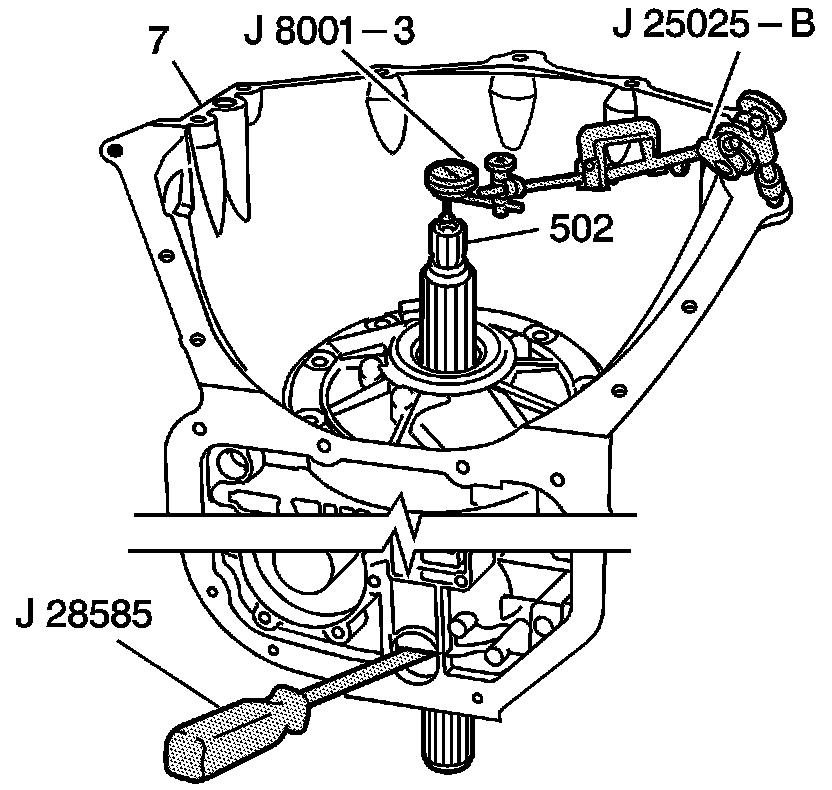

Front End Play Check
Front End Play Check
Tools Required
^ J 8001 Dial Indicator Set
^ J 25025-B Guide Pin Set
^ J 28585 Snap Ring Remover

1. Assemble the J 25025-B by attaching the threaded rod and the dial indicator holder to one of the bolt holes on the transmission case assembly (7).
2. Assemble the J 8001-3 onto the dial indicator holder. Index the J 8001-3 to the end of the turbine shaft (502).
3. Eliminate any slack by pressing down on the turbine shaft (502).
4. Using J 28585, apply upward pressure on the output carrier assembly to remove free play in the retainer ring.
5. Set the J 8001-3 to 0.
6. Pull up on the turbine shaft (502) while holding up the output carrier assembly with the J 28585. The correct end play is 0.102-0.559 mm (0.004-0.022 in).
Important: During reassembly, the front end play check must be repeated in order to verify the accuracy of the selective washer.
7. Record this measurement for future reference.
8. Remove the tools.